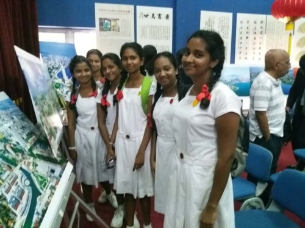
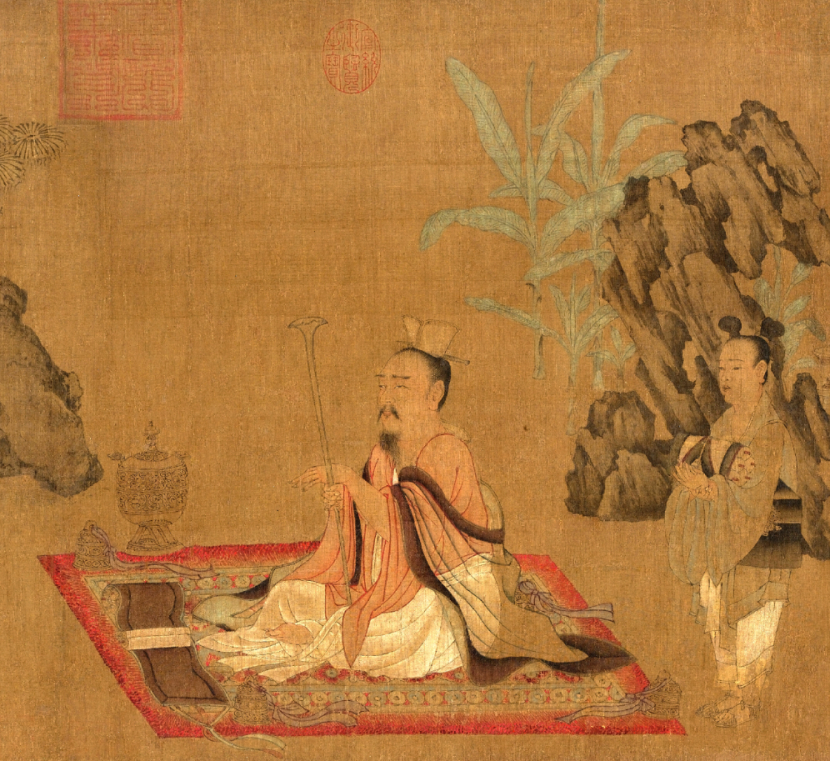
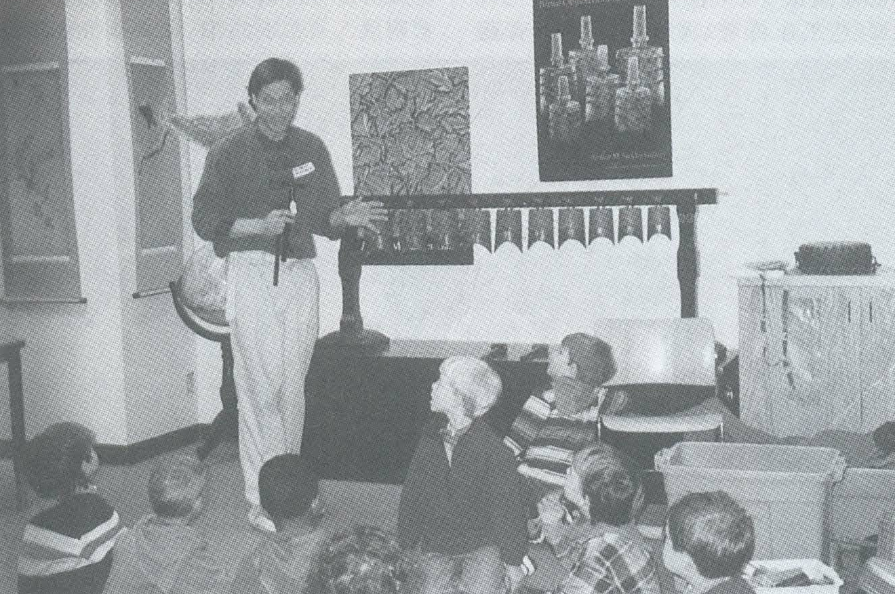
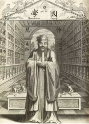
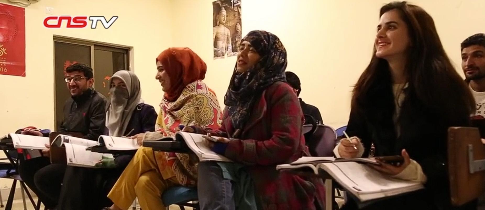

在欧洲，在以法国大革命为背景的民主理想的发展中，孔子哲学起了相当重要的作用。通过法国思想，它又间接地影响了美国民主的发展。——美国学者顾立雅（Herrlee Glessner Creel，1905—1994年）《孔子与中国之道》

“孔子文化图片展”于斯里兰卡首都科伦坡开幕
2017年8月4日上午，由中国孔子基金会、山东省对外友好协会和斯中社会文化协会共同主办的“孔子文化图片展”在斯里兰卡首都科伦坡开幕。此次图片展将在科伦坡文化中心等地巡回展出七天。
此次图片展是中国与斯里兰卡建交60周年之际，＂山东周＂活动的一项主要内容之一，以图文形式展示孔子与儒家学说的历代传承，集中展示了山东各地的社会经济文化的发展状况。

哈佛与孔子
《论语·乡党》中载有孔子“席不正不坐”。或许有的读者从中看到一个迂腐的老夫子的形象。但是哈佛大学普鸣(Michael Puett)教授却认为孔子在待客时是一个愿意从摆正席位的小事做起为客人营造一种友好氛围的主人。 普鸣由此启发哈佛学生：那个你认为不可改变的自我，可只是一些积攒起来的坏毛病罢了，如果你像孔子那样从自己做起，从小事做起，那么你不仅可以让自己越变越好，成为一个更为优秀的人，也可能由此赢得影响他人的机会，从而使社会变得更美好。以这样的方式讲授孔子等中国经典思想家的伦理观念，该门课程成为哈佛最受本科生欢迎的课程之一。
《论语·乡党》中载有孔子“席不正不坐”。或许有的读者从中看到一个迂腐的老夫子的形象。但是哈佛大学普鸣(Michael Puett)教授却认为孔子在待客时是一个愿意从摆正席位的小事做起为客人营造一种友好氛围的主人。 普鸣由此启发哈佛学生：那个你认为不可改变的自我，可只是一些积攒起来的坏毛病罢了，如果你像孔子那样从自己做起，从小事做起，那么你不仅可以让自己越变越好，成为一个更为优秀的人，也可能由此赢得影响他人的机会，从而使社会变得更美好。以这样的方式讲授孔子等中国经典思想家的伦理观念，该门课程成为哈佛最受本科生欢迎的课程之一。

《孔子时代的音乐》在美国展出时，当地的音乐教师给小学生讲解中国古代的乐器编钟

17世纪，著名汉学家柏应理等人编译的《中国哲学家孔子》中收录了一张西方人画的孔子像，这应该是西方人第一次看到的孔子形象，这一形象在17、18世纪的欧洲广为流传。画中的孔子身穿儒服，头戴儒冠，手持象笏，站在一座庙宇式的图书馆前。身后两旁是装满经书的大书架，书架上的书籍均标出书名，一边是《书经》《春秋》《大学》《中庸》《论语》，另一边是《礼》《易经》《系辞》《诗经》《孟子》，书架的下面还有孔子弟子的牌位。很明显，这本书里的孔子是一位贤哲，而非先知。美国学者孟德卫曾指出：这种描绘显示出了耶稣会传教士是如何强调孔子的理性一面，这正是欧洲人推崇孔子的重要原因。

走进伊斯兰堡首座孔子学院：实现青年理想
2005年，中国北京语言大学和巴基斯坦国立现代语言大学联合建立了伊斯兰堡孔子学院，这也是伊斯兰堡的第一所孔子学院。
孔子学院的老师哈希卜说，“我学习汉语时还没有‘中巴经济走廊’，也没有‘一带一路’倡议，学汉语的年轻人出路并不多。”随着两国合作的持续推进，越来越多的项目落地巴基斯坦，为当地提供大量就业机会，“汉语热”也在巴基斯坦蔓延开来。
“我的愿望是成为汉语教师，这样我就能教巴基斯坦人说汉语，教中国人说乌尔都语，增进两国间的友谊。”今年23岁的明月(Saira Banu)是伊斯兰堡孔子学院的学生。
在学习汉语的过程中，明月对两国合作也有自己的理解：“一带一路”是连接沿线各国的桥梁，掌握乌尔都语、汉语、英语的自己就能成为筑牢桥梁的一块钢、一片瓦；“中巴经济走廊”则为年轻人提供了更多施展抱负的机会，去实现理想、改变命运。